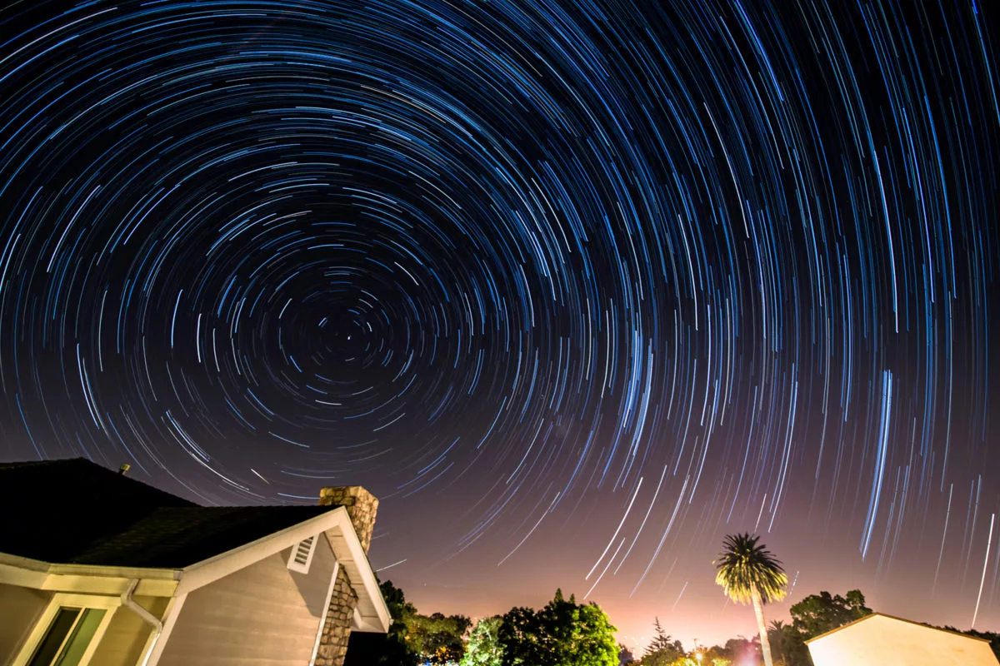

Timing and planning are as important for astrophotography as they are for everyday photography. Scout your shoot location ahead of time to get a sense of the layout and visualize your compositions. Consider including interesting features of the landscape in the foreground of your image to help tell a story and convey a sense of place. Familiarize yourself with the night sky using apps and other resources. Know the moonrise time in your location, as well as when the objects you’re interested, such as the Milky Way, will rise and the direction they will travel overhead. PhotoPills is a fantastic photography app to use for planning.
Light pollution is an important consideration when selecting a shoot location. Get as far away from city lights as possible, and if possible, go to higher elevations where there are less particles in the air to scatter light. This will make your images clearer and more detailed. Shooting in colder temperatures will give you cleaner images due to your camera’s sensor heating less during long exposures and generating less noise.
Milky Way
There’s nothing more incredible than seeing the grandeur of the Milky Way from a dark location. The Milky Way is best photographed during a new Moon—or up to one week before or after—as the Moon’s brightness will wash out the Milky Way.
When photographing the night sky, you need to account for the Earth’s rotation. You can only expose your image for a short time before the stars are no longer pinpoints and begin to trail in your image. Since you’re trying to capture as much light from the sky as possible, it’s important to use a wide-angle lens that has a large maximum aperture (f/2.8 or lower). A 14-24mm wide-angle zoom lens ideal to use on a full-frame camera, or a 10-20mm lens on a crop-sensor camera.
Though the new moon gives you the best dark skies, it's OK to have a little moon if its backlit and low in the shot to help light your foreground, and I will sometimes shoot on nights where there is up to a 30% moon visible, any more than this and you'll start to find the Milky Way gets washed out. I wouldn't attempt to shoot a composition that had both the stars and the moon in the frame as the moon will be very overpowering.
If you are shooting in a very dark sky location, you may need to shoot at ISO 6400 or ISO 10,000 to make the camera sensor sensitive enough to collect the light required. The downside of shooting at a very high ISO is that you will then get a 'noisy' or grainy image, unfortunately it's the tradeoff that has to be made. Noise is also more apparent with larger full-frame and high MP sensors.
Star Trails
We do everything possible to avoid star trails when shooting the Milky Way, but sometimes the trails are exactly what we aim to capture. Long exposures of star trails create gorgeous images of the night sky that depict the passage of time.
In the northern hemisphere, all of the stars in the night sky appear to revolve around the North Star, or Polaris. If you shoot a long exposure with your camera pointed at Polaris, you’ll notice that all of the stars circle around it. Use Polaris as your guide when choosing a direction to shoot. The two outermost stars in the bowl of the Big Dipper point to Polaris.

Using a longer focal length is your best choice if you want longer star trails to appear over a shorter period of time. Use the widest aperture setting on your lens so you can shoot at the lowest possible ISO when exposing your image. Always remember that a higher ISO means more noise.
Place your camera in continuous shooting mode and set the shutter speed to your desired exposure time. By locking the shutter button down on your shutter-release cable, your camera will take consecutive images as each exposure ends until you stop it. Alternatively, you can use the built-in intervalometer on your camera (if it has one) to set the desired parameters.